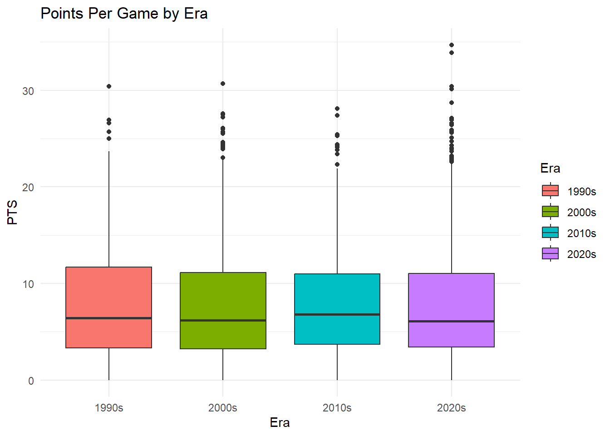
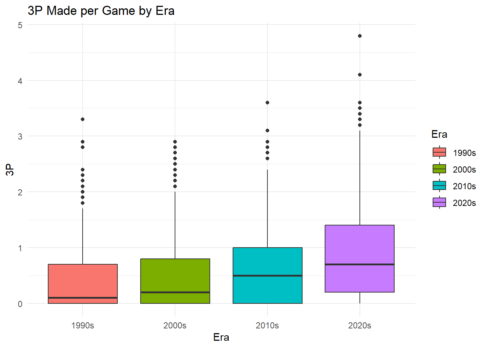
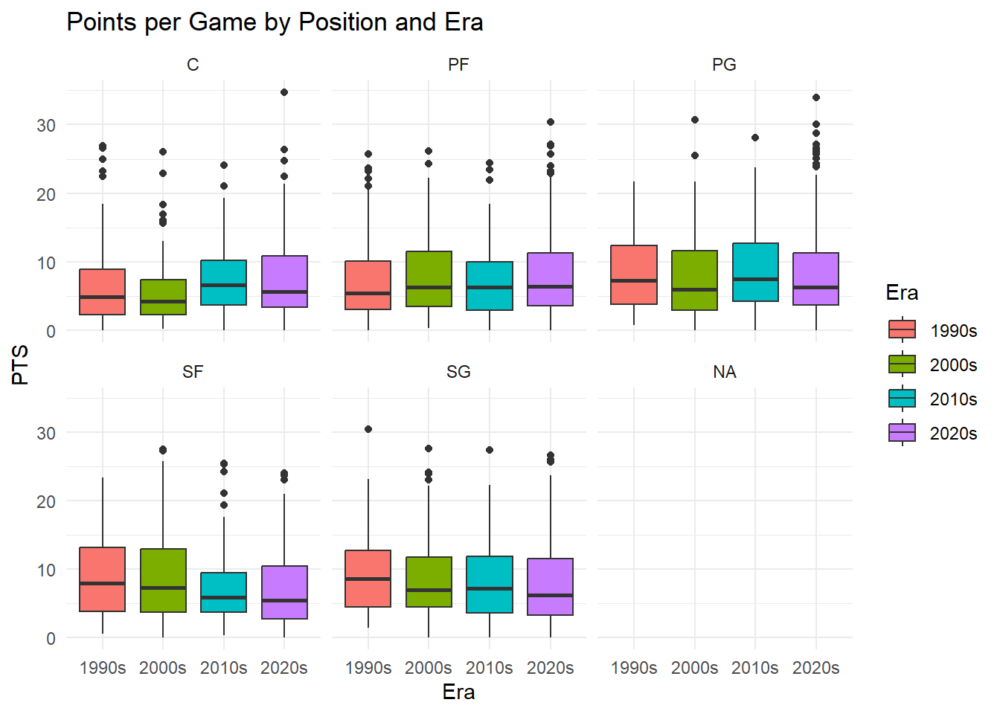
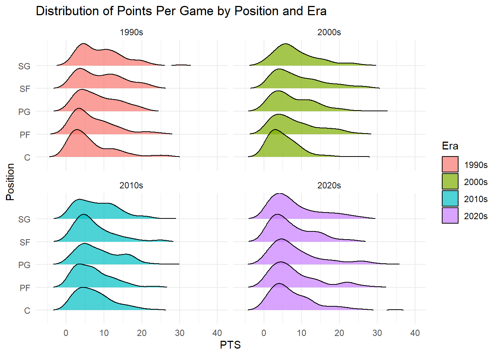

Warning: package 'ggplot2' was built under R version 4.4.3
ggplot(nba_all, aes(x = Era, y =as.numeric(PTS), fill = Era)) +geom_boxplot() +labs(title ="Points Per Game by Era", y ="Points", x ="Era") +theme_minimal()
Warning: Removed 4 rows containing non-finite outside the scale range
(`stat_boxplot()`).
ggplot(nba_all, aes(x = Era, y =as.numeric(`3P`), fill = Era)) +geom_boxplot() +labs(title ="3P Made per Game by Era", y ="3P Made", x ="Era") +theme_minimal()
Warning: Removed 4 rows containing non-finite outside the scale range
(`stat_boxplot()`).
ggplot(nba_all, aes(x = Era, y =as.numeric(`3P`), fill = Era)) +geom_boxplot() +labs(title ="3P Made per Game by Era", y ="3P Made", x ="Era") +theme_minimal()
Warning: Removed 4 rows containing non-finite outside the scale range
(`stat_boxplot()`).
library(ggridges)
Warning: package 'ggridges' was built under R version 4.4.3
library(ggthemes)
Warning: package 'ggthemes' was built under R version 4.4.3
### 2. Boxplot: PTS by Eraplot_pts_era <-ggplot(nba_all, aes(x = Era, y = PTS, fill = Era)) +geom_boxplot() +labs(title ="Points Per Game by Era", y ="PTS", x ="Era") +theme_minimal()### 3. Boxplot: 3P by Eraplot_3p_era <-ggplot(nba_all, aes(x = Era, y =`3P`, fill = Era)) +geom_boxplot() +labs(title ="3P Made per Game by Era", y ="3P", x ="Era") +theme_minimal()### 4. Boxplot: PTS by Position and Eraplot_pts_pos <-ggplot(nba_all, aes(x = Era, y = PTS, fill = Era)) +geom_boxplot() +facet_wrap(~ Pos) +labs(title ="Points per Game by Position and Era", y ="PTS", x ="Era") +theme_minimal()### 5. Ridgeline Plot: PTS by Position (Faceted by Era)plot_ridge <-ggplot(nba_filtered, aes(x = PTS, y = Pos, fill = Era)) +geom_density_ridges(scale =1.2, alpha =0.7, rel_min_height =0.01) +facet_wrap(~ Era) +labs(title ="Distribution of Points Per Game by Position and Era", x ="PTS", y ="Position") +theme_minimal()### 6. Density Plot: 3PA by Eraplot_3pa_density <-ggplot(nba_all, aes(x =`3PA`, fill = Era)) +geom_density(alpha =0.5) +labs(title ="Density of 3PA by Era", x ="3PA", y ="Density") +theme_minimal()### 7. Histogram: PTS Distribution by Eraplot_pts_hist <-ggplot(nba_filtered, aes(x = PTS, fill = Era)) +geom_histogram(bins =30, alpha =0.7, color ="white") +facet_wrap(~ Era) +labs(title ="Histogram of Points per Game by Era", x ="PTS", y ="Count") +theme_minimal()# Display all plotsplot_pts_era
Warning: Removed 4 rows containing non-finite outside the scale range
(`stat_boxplot()`).

plot_3p_era
Warning: Removed 4 rows containing non-finite outside the scale range
(`stat_boxplot()`).

plot_pts_pos
Warning: Removed 4 rows containing non-finite outside the scale range
(`stat_boxplot()`).

plot_ridge
Picking joint bandwidth of 1.92
Picking joint bandwidth of 1.93
Picking joint bandwidth of 1.71
Picking joint bandwidth of 1.91

plot_3pa_density
Warning: Removed 4 rows containing non-finite outside the scale range
(`stat_density()`).
# 4. Visualization: 3P vs. PTS by Eraggplot(nba_model_data, aes(x =`3P`, y = PTS, color = Era)) +geom_point(alpha =0.5) +geom_smooth(method ="lm", se =FALSE) +labs(title ="Relationship Between 3P and PTS by Era",x ="3P Made per Game",y ="Points per Game" ) +theme_minimal()